Me preguntan : ¿ Qué os pasa ahora con esto de los MIR ? , ¿ quién tiene la razón en esta polémica ? , ¿ cuál es tu opinión ? Y constato inmediatamente que la población no conoce bien el problema.
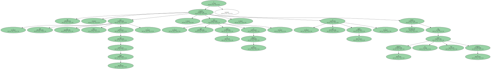Quiero dejar bien claro , como premisa fundamental , que no estamos ante una guerra entre médicos con el fin de ganarse una posición de privilegio.
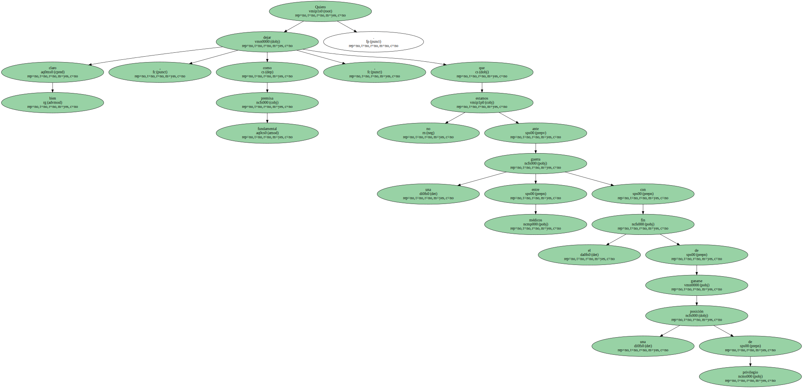Esta visión es rotundamente falsa.
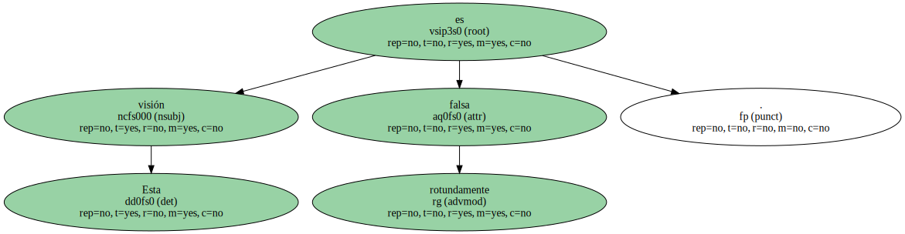Quien extiende esta idea pretende desenfocar la causa real del problema.
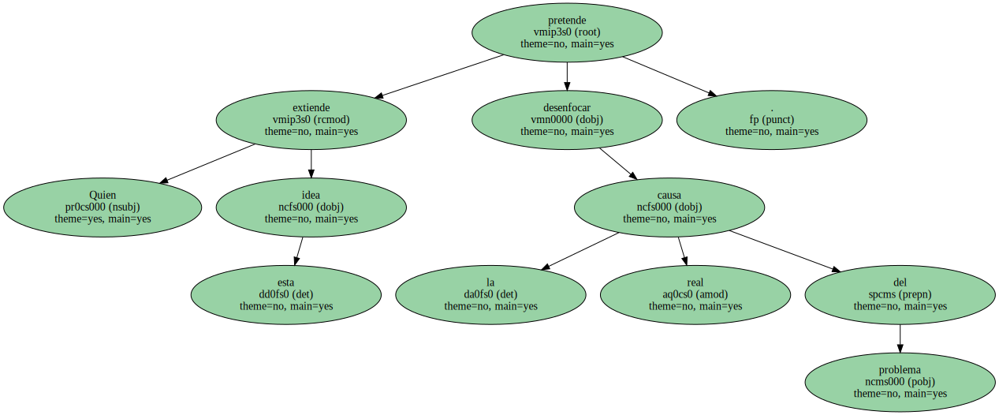El origen de la actual situación no es otra que la improvisación y falta de coordinación a la hora de planificar con suficiente adelanto las necesidades de nuestra sociedad , tanto de médicos en general ( somos el país europeo con mayor proporción de estos profesionales por número de habitantes ) como del exceso de especialidades médicas existentes ( somos después de Italia el que tiene mayor número ) y también del número de especialistas en algunas de ellas , si bien es cierto que en algunos periodos han existido déficits.
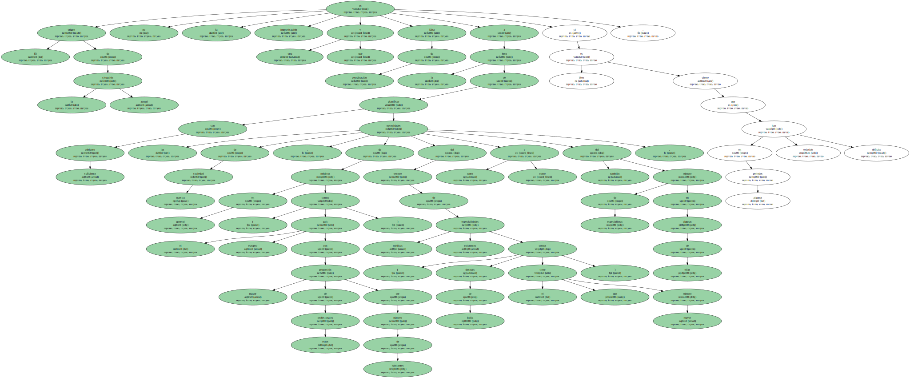Como consecuencia ejercen como médicos especialistas dos poblaciones de formación distinta.

Una , la MIR , que sigue una formación reglada , con estándares prefijados y larga tradición que necesita una puesta al día que nosotros mismos hemos manifestado recientemente.
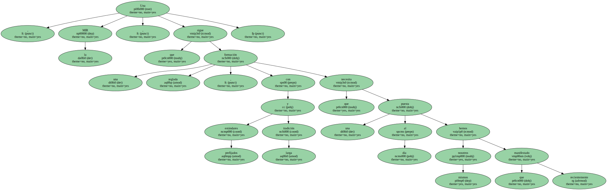Y otra , la mesto - - cuyos componentes no accedieron a la MIR ( la mayoría por no haber superado el examen con suficiente calificación ) - - ha seguido fórmulas heterogéneas de formación cuyos resultados , lógicamente , son también heterogéneos.
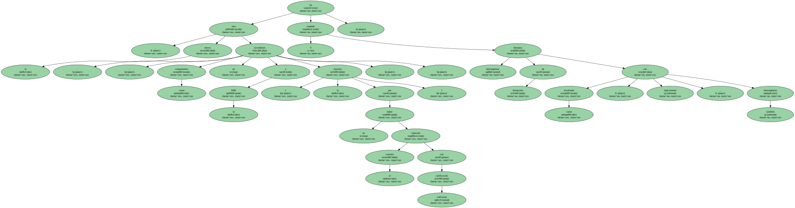Es evidente que quienes se preparan para pasar una prueba de evaluación de conocimientos ( examen MIR ) y al superarla siguen una formación reglada de varios años ( entre tres y cinco , según la especialidad ) tienen mejores condiciones para capacitarse como especialistas cualificados que quienes siguieron otros caminos.
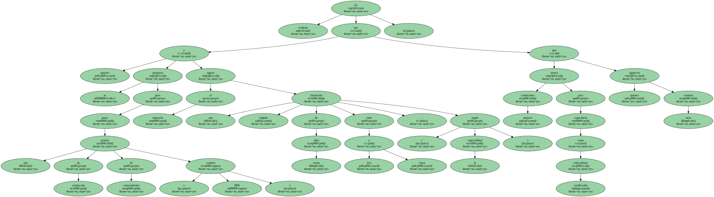El estudio comparativo de dos cohortes con estas características fue el objeto de mi tesis doctoral presentada en la Universitat de Barcelona hace ahora seis años y cuyas conclusiones globales no sorprendieron a nadie : aquel colectivo MIR mostró mejor nivel de competencia clínica que el resto , si bien las diferencias fueron más destacadas en los aspectos de conocimientos que en los que analizaban más las cualidades del ejercicio profesional en sí.
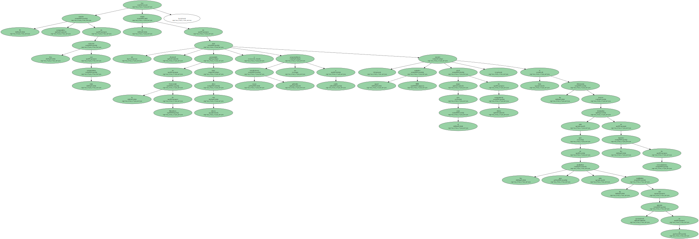Nos pareció lógico ; la formación MIR , empezando por el mismo examen de acceso , ha seleccionado siempre a quienes tienen más capacidad de adquirir y memorizar conocimientos.
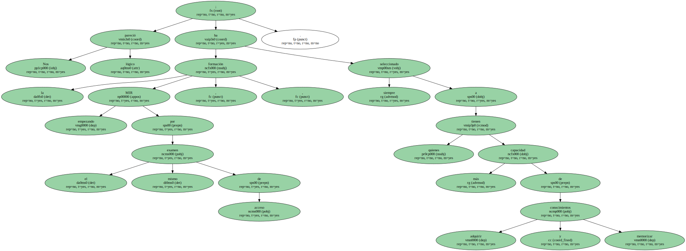De ello no debe inferirse automáticamente que van a ser siempre los mejores futuros especialistas cuando deban aplicarlos a la práctica médica.
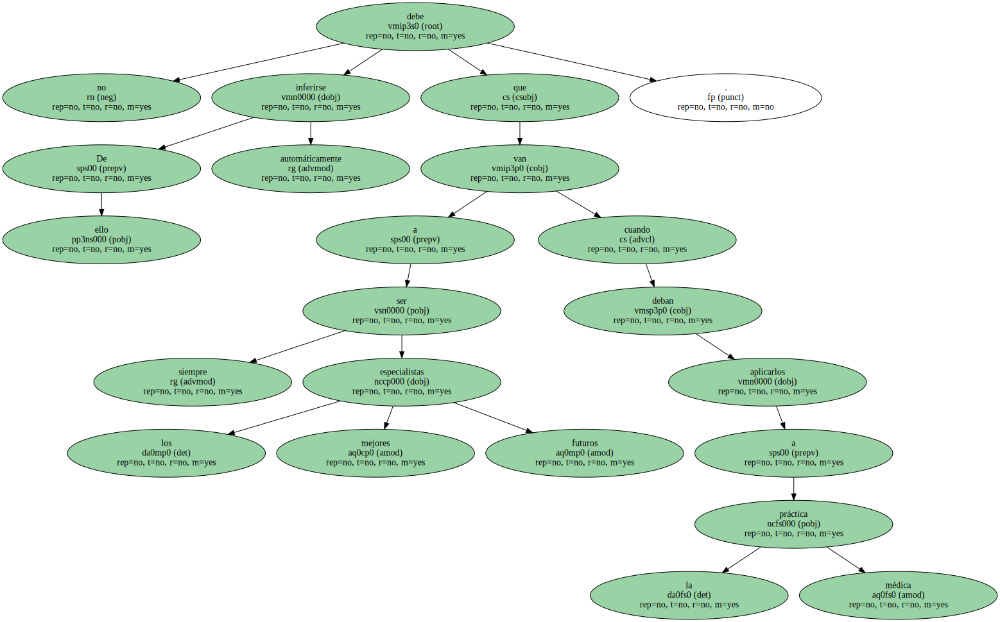Saber en nuestra profesión es imprescindible , pero no es suficiente.
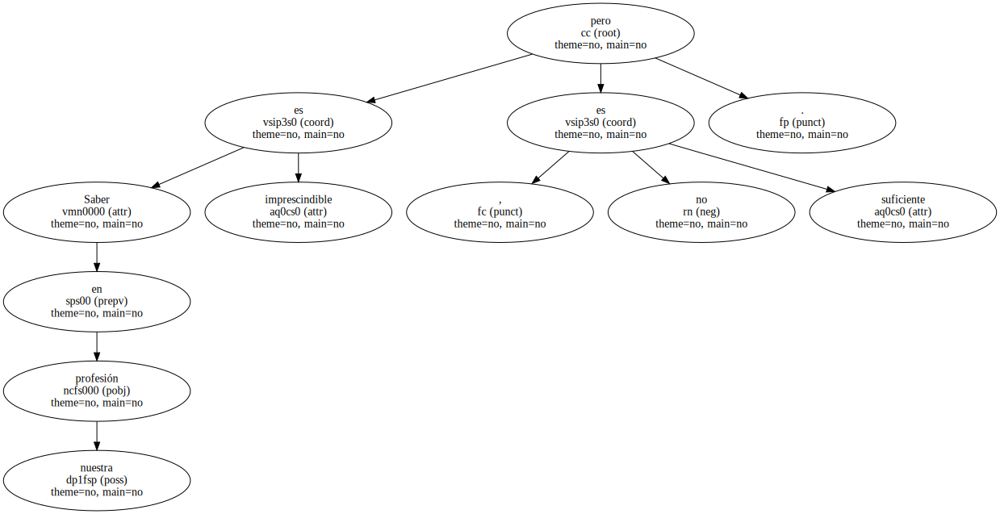Aplicar el saber con eficacia y calidad es lo que los ciudadanos nos piden cada vez más a los médicos , y a veces parece como si lo hayamos perdido de vista.
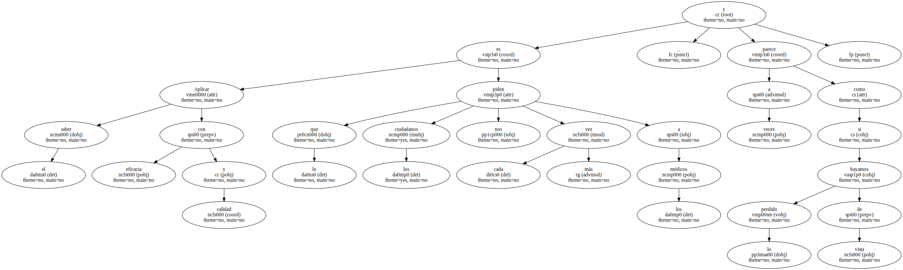La administración de la Unión Europea ( UE ) tampoco ha demostrado hasta el momento , en este caso de los candidatos a especialistas médicos de facto , una excelente capacidad de previsión ni de resolución.
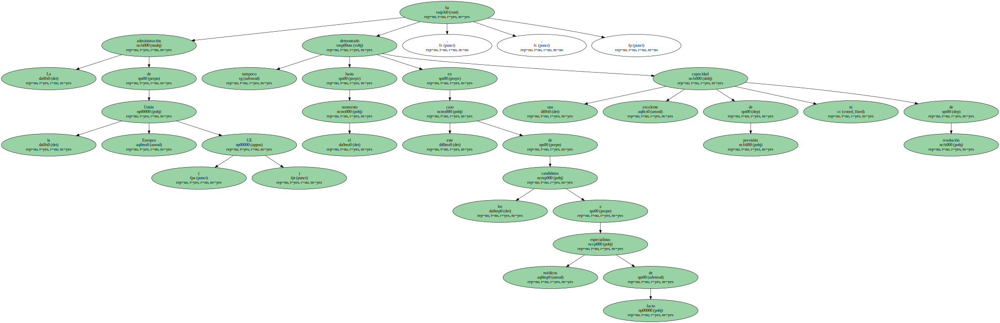Ha emitido una normativa y nada más.
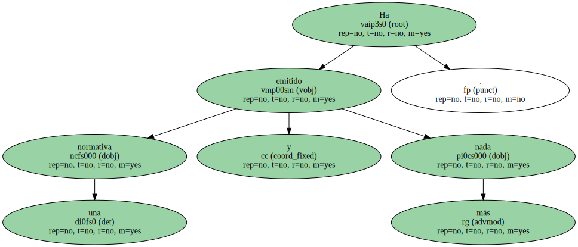No ha tenido en cuenta las características de los países de la UE que tienen , aunque suene extraño , grandes diferencias en sus sistemas de formación médica.
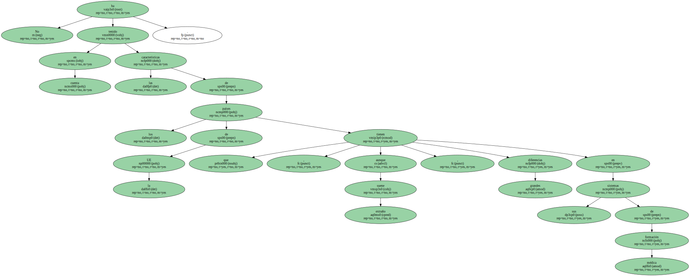Parece como mínimo sorprendente que la UE obligue a tener un título a todos los que ejerzan como especialista , pero que no se faciliten herramientas para evaluarlo de forma eficaz , equitativa e igualitaria en todos los países.
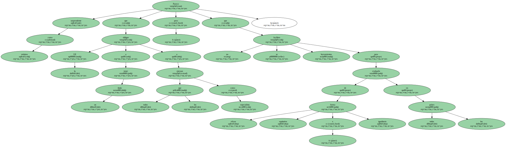Si el detonante del conflicto , como así parece , ha sido esta normativa , parecería lógico que se hubieran facilitado las fórmulas para hacer esa evaluación.
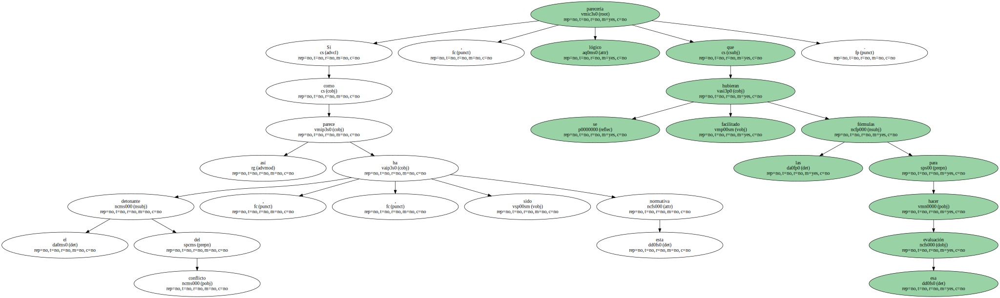Me consta que se hicieron algunas consultas , pero a la luz de los resultados está claro que no se acertó en la estrategia.
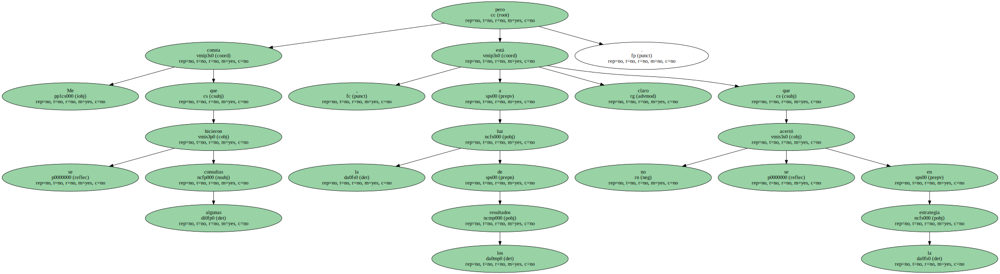Estarán de acuerdo conmigo que hubiera sido mejor el análisis de las previsibles dificultades en la implantación del fatídico decreto que llegar a la actual situación , en la que los auténticamente enfrentados - - los defensores de la vía MIR ( incluidos la mayoría de médicos de hospitales públicos que secundaron la huelga el pasado Martes ) y la Administración estatal - - pretenden buscar soluciones técnicamente aceptables en un marco distorsionado por el conflicto y las consiguientes presiones de terceros.
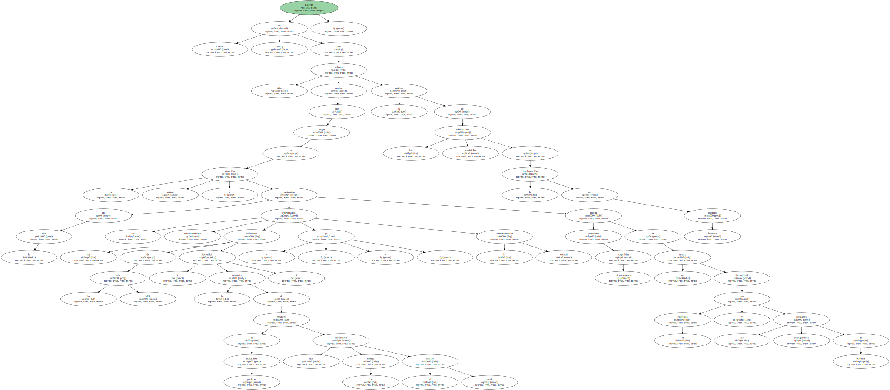La actual situación deberá resolverse de la manera más digna posible ( la clave está en encontrar el instrumento de medida de calidad profesional más justo , acotando al máximo posible las nuevas certificaciones ) y actuar con sensatez , sentando unas bases sólidas para que en el futuro no volvamos a encontrarnos de nuevo con estos desaguisados.
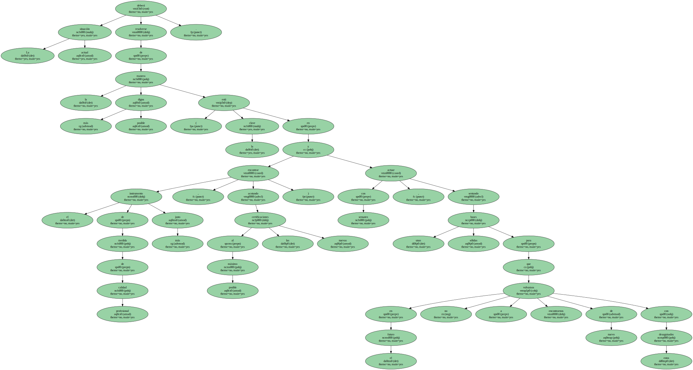Por lo tanto , debe actualizarse el sistema MIR , que ha de ser la única vía de formación de una vez por todas.
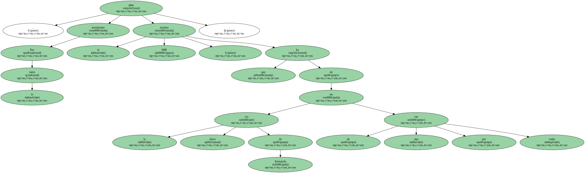Esta reforma ha de establecer la adecuación del número y tipo de especialistas que el país necesita , la flexibilización en las áreas de competencia , el énfasis en la capacitación por encima de la titulación , la actualización de los programas formativos de acuerdo a la sociedad del siglo XXI , la formación y motivación de los responsables de la tutorización y , por encima de todo , la consolidación de un sistema de evaluación a la imagen del de las residencias de EEUU ( boards ) , que fue de donde nació el mismo sistema MIR hace más de 20 años.
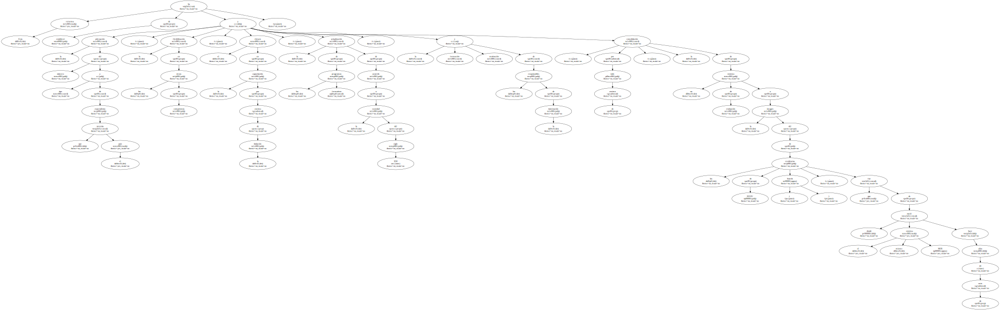Conseguirlo es un reto para todos.
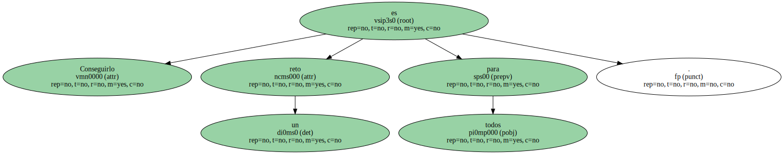Ello aumentará la credibilidad de la propia formación , garantizará objetivamente a los ciudadanos la calidad de las prestaciones que reciban y prestigiará al colectivo médico , que de paso no nos vendrá nada mal.
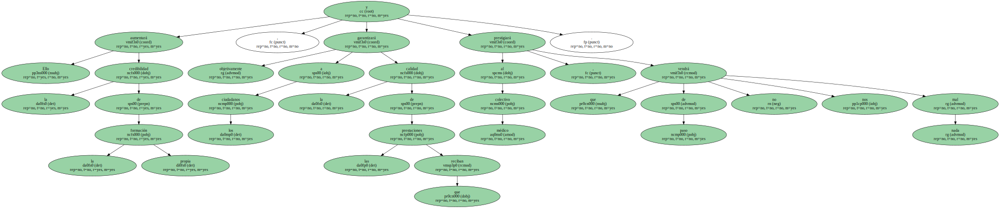Finalmente , de esta manera , evitaremos en el futuro normativas como la originaria del actual conflicto que son sintomáticas de una vieja Europa en reconstrucción.
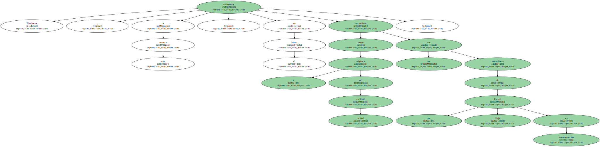